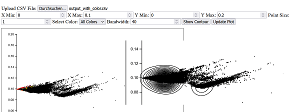
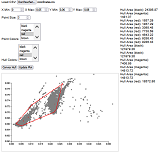
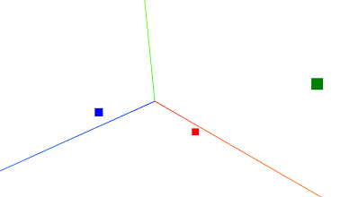

To run the scripts in Windows, the files `main.go` and `server.go must be in the same folder.
Then start the server in the dos console with:
`go run main.go`or if you already did `go build main.go` then launching or clicking on "main.exe" will suffice.
If the message "server listening on port 8080..." appears in the console, you are all set. This runs a server instance on port 8080.
Go to a local web browser at http://localhost:8080/ and the plotting utilities listed below should be available.
Note: The CAPASYDIS asymdist .csv files must start with the line x,y,label,color to be correctly parsed by the scripts.
If a third coordinate is provided, such as (x,y,z,label,color), then the z variable is ignored for the 2D plots.
| Status | Name | Description | Data loading | Zoom | Point color | Point size modifiable | Information on mouseover | Preview |
|---|---|---|---|---|---|---|---|---|
✔ |
contours | Plot one color at the time. Reads only "x,y,color,label". With contour and adjustable bandwith option. Mouseover + click to print the label. | selection |
Input box | ✔ |
✔ |
✔ |
 |
✔ |
hulls | Plot multiple color selections. Reads only "x,y,color,label". Displays colored hulls and prints areas. Mouseover + click to print the label. | selection |
Input box | ✔ |
✔ |
✔ |
 |
✔ |
3D | Plot the points in 3D. Interactive mouse zooming and rescaling. | selection |
Mouse roll | ✔ |
✖ |
✖ |
 |
| .... | .... | ... | ... | ... | ... | ... | ... | ... |